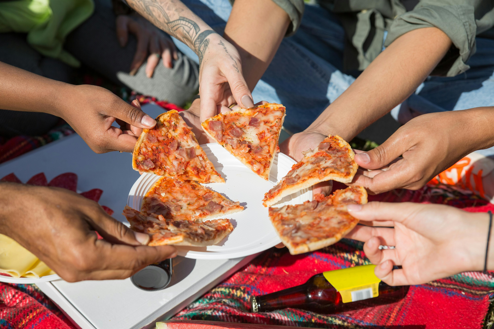

Our Story

Founded in 1995, Pizza Paradise has been serving the community with authentic Italian recipes passed down through generations. Our mission is simple: create the perfect pizza using fresh, locally-sourced ingredients while providing exceptional service to our valued customers. Every pizza we make is crafted with love and attention to detail, ensuring you get the best dining experience possible.
A Legacy of Flavor
It all began when our founder, Antonio Rossi, brought his family’s cherished pizza recipes from Naples, Italy, to our small town. With a wood-fired oven and a passion for perfection, Antonio turned a humble kitchen into a local legend. Over the past three decades, we’ve grown from a single storefront to a beloved community staple, all while staying true to our roots. Our dough is still hand-kneaded daily, and our sauces are simmered with the same care Antonio used in his first batch.
Our Team
At Pizza Paradise, our staff is more than just employees—they’re family. From our skilled pizzaiolos who master the art of dough-tossing to our friendly delivery crew who bring the pizza to your door, each team member plays a vital role in our story. We take pride in training every staff member in the traditional techniques that set us apart, ensuring that every bite reflects our commitment to quality.
Community at Heart
We believe in giving back to the community that’s supported us since day one. Pizza Paradise hosts annual pizza-making workshops for kids, sponsors local sports teams, and donates a portion of our proceeds to food banks. Our "Pizza with Purpose" nights bring neighbors together to enjoy great food while supporting local causes. For us, it’s not just about pizza—it’s about building connections that last.
What Makes Us Special
Beyond our recipes, it’s the little things that define Pizza Paradise. Our signature crust options—like the fan-favorite Stuffed Crust or the crispy Thin Crust—are made with a secret blend of flours perfected over years. We source our toppings from nearby farms and artisans, from ripe tomatoes to creamy mozzarella made just down the road. Whether you’re a meat-lover, veggie enthusiast, or gluten-free foodie, we’ve got something to delight your taste buds.